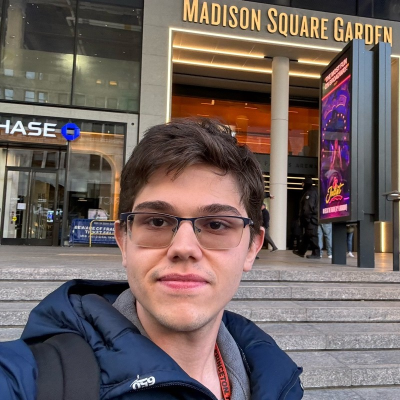
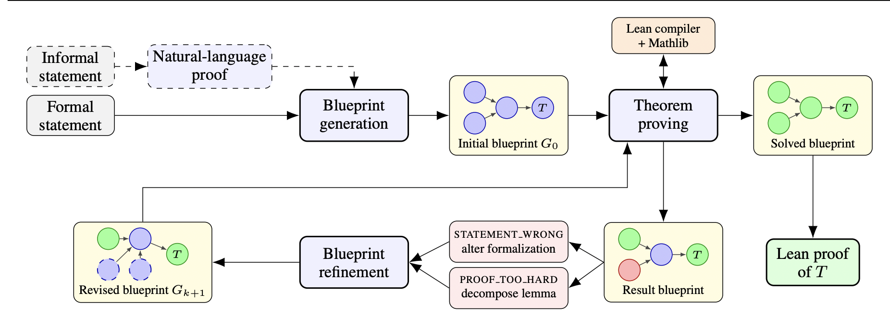
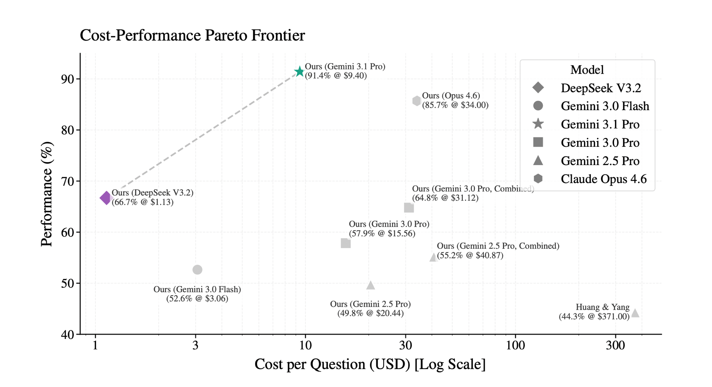

Princeton Math '27
Hi! I'm Rodrigo, a junior at Princeton studying Mathematics with minors in Statistics & Machine Learning. I'm broadly interested in large language models for mathematics — improving reasoning, formal theorem proving, and the gap between competition-style math and real research math.
Some notable things worth mentioning:
Reach out at rodrigaosdp [at] gmail [dot] com.


